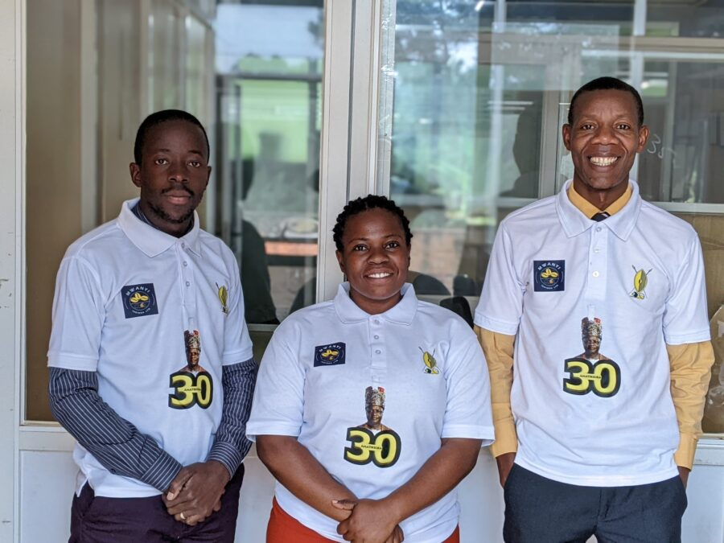
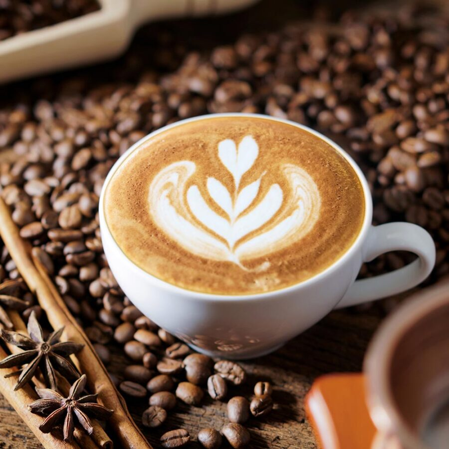
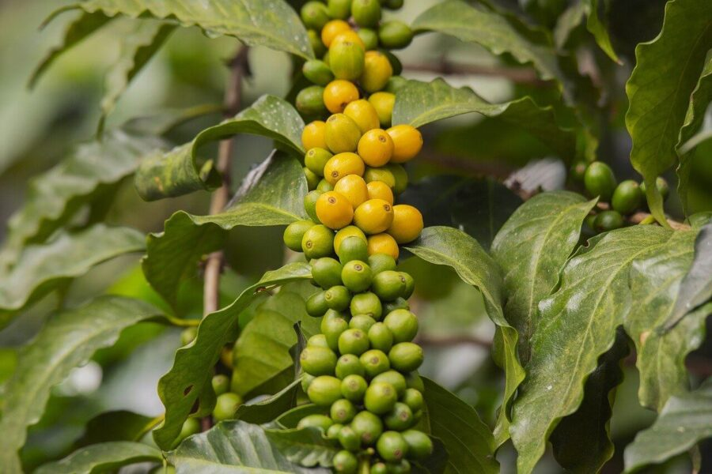

Campaign roots
Built from a Buganda coffee movement with farmer growth at its heart.
The Buganda Coffee House
Kaawa Mpologoma by Mwanyi Terimba Ltd
From grower support to the final cup.
Visit our Katwe coffee house, order for home or office, and work with a team committed to quality, value addition, and dependable coffee supply.
About us
Mwanyi Terimba Limited grew from the EMMWANYI TERIMBA campaign in Buganda, a movement that encouraged more coffee growing, farmer education, and stronger pride in Uganda's coffee heritage.
Today we focus on value addition through roasting, packing, market access, and dependable distribution for households, offices, retailers, and wholesale buyers.
Built from a Buganda coffee movement with farmer growth at its heart.
From green beans to roasted packs ready for shelves, offices, and homes.
Serving Katwe pickup, supermarket shelves, and wider delivery support.
"Our Coffee quality is defined by care and passion at every step, from cultivation to cup. Excellence sets us apart."

Leadership anchored in quality, farmer value, and a long-term coffee vision for Buganda and beyond.
Coffee served
The Royal Coffee Brand
A signature coffee identity that celebrates Buganda heritage while delivering a modern and premium coffee experience.
Our Coffee Catalogue
From ready-to-brew packs to whole beans and green coffee, Mwanyi Terimba serves homes, hospitality spaces, retailers, and wholesale buyers.

Roasted Ground
Roasted beans are ground according to texture that is to say coarse and fine ground profiles. It comes in its different quantities; 20gms, 50gms, 100gms, 250gms, 500gms, 1kg.
Ask About Supply
Roasted
These coffee beans are roasted according to size under different roast profiles that is to say light, medium and dark roast according to customer preference.
Ask About Supply
Green
There are two varieties; Natural Robusta (dried under the sun, with the cherry still on) and washed and natural Arabic. These literally appear much cleaner than the former.
Request Green CoffeeWhy Choose Us
We combine quality coffee, stronger farmer value, and practical supply support for everyday customers and growing businesses.
Our coffee is sourced from the finest beans, ensuring a rich and robust flavor in every sip.
We are committed to sustainable farming practices and ensure farmers are fairly compensated for their hard work.
Your satisfaction is our priority. We value our customers and strive to produce excellent coffee products at all times.
We build long-term value through transparent sourcing, stronger farmer relationships, and responsible market access.
Join Our Coffee Subscription
Set up recurring supply for home, office, gifting, or resale and let our team help you choose the right pack sizes and delivery rhythm.
Flexible plans, easy ordering, and coffee packed with freshness in mind.
Scale & Impact
We have a warehouse in Namanve Industrial Area, which houses a substantial stockpile of coffee, reserved for future distribution or for when market prices are more advantageous.
We're considering the establishment of coffee collection centers at the county level to easily procure produce from smallholder farmers.
Across Uganda
Every coffee season
Across the coffee industry
Twala Essanyu Ewaka
Feedback from graduates, professionals, creators, and international coffee advocates who have experienced Kaawa Mpologoma.
Your Queries, Our Answers
Helpful answers to common questions about our products and services.
Our headquarters are situated in the Muganzirwazza Commercial Complex, Katwe, where you're welcome to collect your packet. We're proud to have our products available in over 200 supermarkets throughout Kampala, Wakiso, and Entebbe. We also offer delivery services. Please feel free to reach out to us at +256-778-253810 or +256-762-261955 for any inquiries.
Pricing depends on pack size and product type. We offer 20g, 50g, 100g, 250g, 500g, and 1kg packs. Contact our sales team for current retail, wholesale, and subscription prices.
Mwanyi Terimba was born from a campaign focused on coffee farmer education and seedling distribution. For current availability and guidance, please contact our office so we can direct you appropriately.
Yes. We support buyers interested in green coffee beans as well as roasted and finished coffee products, depending on customer preference and supply arrangements.
Order & Visit
Visit our Katwe coffee house, speak to sales directly, or find a stockist near you for Kaawa Mpologoma.
Muganzirwazza Commercial Complex, Katwe
Choose pickup at Katwe or contact us for guidance on the nearest outlet, larger supply needs, or delivery arrangements.
Muganzirwazza Commercial Complex, Katwe.
Distribution, storage, and support for larger supply arrangements.
Monday to Friday 08:00am-05:00pm, Saturday 08:00am-12:00pm.
Direct Support
For home, office, retail, hospitality, or wholesale coffee needs, our team can guide you on pack sizes, pricing, delivery, and availability.
Pack sizes: 20g, 50g, 100g, 250g, 500g, and 1kg.
Supply support: Roasted ground coffee, whole beans, and green coffee options.
Coffee Guides
Practical brewing advice and brand stories to help customers enjoy coffee better and understand the Mwanyi Terimba journey.
Heat some water, then pour it into the bottom chamber of the percolator. For best results, use filtered or bottled water.
Read More
In general, you will need 6 ounces (180 mL) of water for each serving of coffee. Use filtered or bottled water; avoid tap, distilled, or softened water.
Read More
Remove the lid and plunger first, then add the coffee. You will need 2 tablespoons (14 g) of ground coffee for each serving.
Read MoreKaawa Moments
A preview of the people, products, and everyday moments behind our coffee journey.



